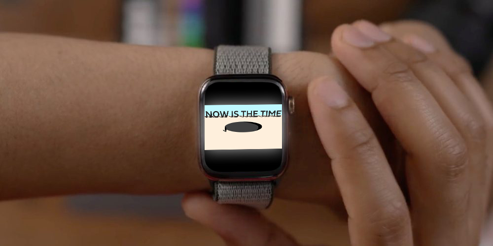

"Now is the Time" is like someone motivating themself for a leap of faith. A person is depicted jumping into the a void of unknown. As that person jumps into the unknown, everything starts to become abstracted as they continue downwards. The construct of time starts to become nonexistent, warping the linear perception of time. It becomes cyclic and linear at the same time. It warps time to the point where the person would end up where they just started. Here are some questions to ask yourself:
Is time linear? Is time cyclic?
Is time cyclic?
How can something so mundane be so unknown to us?
Are we taking a leap into the unknown, whenever we embrace time?
Does time start or end?
When time ends, do we end?
Is the hole a representation of time?
If so, is there a limit to time?
How many times can we jump through the hole until we stop?
There is an infinite amount of questions you can ask yourselves because there is an infinite amount of possiblities of how time works.
Apple Watch
They can touch it to play and touch it again to play it in reverse.
They can hear the soundtrack of the animation.
It can possible be set so that it would automatically play every hour.
Location: anywhere

Interative Art Museum - Projectors
They can sit around or on it.
They can touch it, but they would only be touching the wall it is projected on.
They can hear the soundtrack of the animation playing from surround sound speakers.
They can have their bodies be part of the screen as it projects onto them.
Location: NYC
Large Digital Billboard
They can not interact with the screen
They can see it from really far away and still discern the content.
They can only hear the animation soundtrack if they are close.